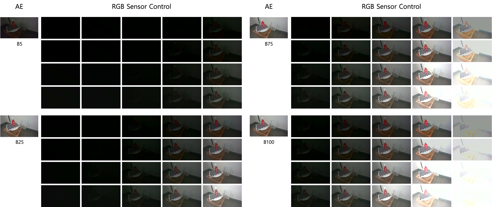
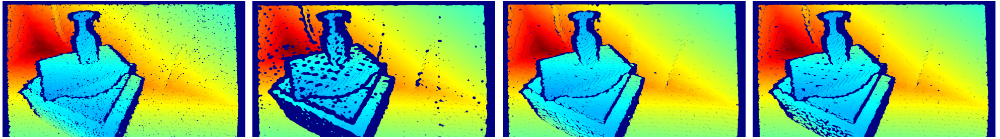
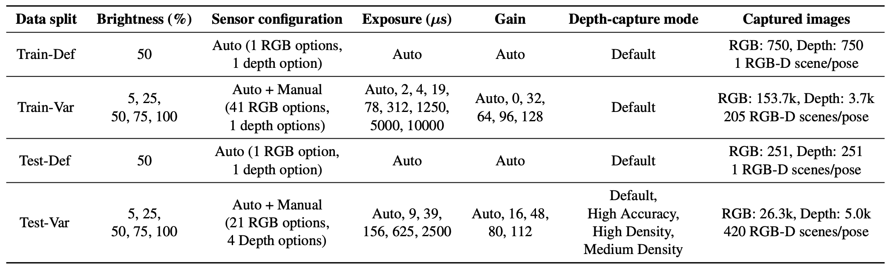
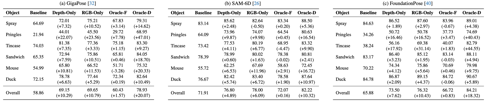
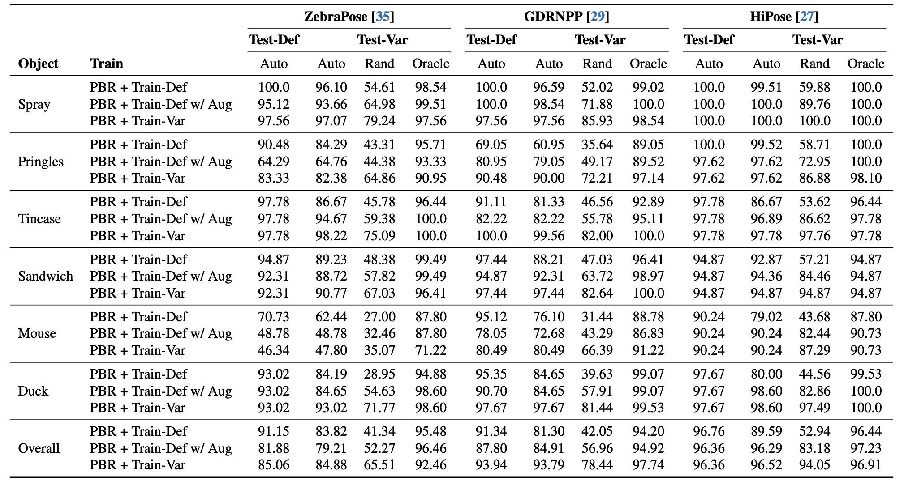

Abstract
Recent advances on 6D object pose estimation have achieved high performance on representative benchmarks such as LM-O, YCB-V, and T-Less. These datasets capture natural-occurring variations in illumination and camera setup but do not systematically explore the effects of controllable sensor configurations, such as exposure, gain, and depth-sensor modes. To bridge this gap, we introduce SenseShift6D, the first RGB-D object-pose benchmark that physically sweeps 13 RGB exposures, 9 RGB gains, auto-exposure, 4 depth-capture modes, and 5 illumination levels. For six common household objects, we acquire 198.8k RGB and 20.0k depth images (i.e., 795.4k RGB-D scenes), providing 1,380 unique sensor-lighting permutations per object pose. Experiments with state-of-the-art pretrained, generalizable pose estimators reveal substantial performance variation across lighting and sensor settings, despite their large-scale pretraining. Strikingly, even instance-level estimators-trained and tested on identical objects and backgrounds-exhibit pronounced sensitivity to environmental and sensor shifts. These findings establish sensor- and environment-aware robustness as an underexplored yet essential dimension of 6D pose estimation. To illustrate the opportunity enabled by this benchmark, we evaluate test-time sensor selection without retraining. An idealized controller yields remarkable gains of up to +16.2 pp for generalizable models, whereas a practical consistency-based proxy provides only limited improvements, highlighting substantial headroom and the need for future research on reliable sensor-aware adaptation. SenseShift6D is available at huggingface.co/datasets/Yegyu/SenseShift6D.
SenseShift6D Overview

for brightness 5%, 25%, 75% and 100%.

SenseShift6D is the first RGB-D benchmark to systematically evaluate the robustness of object pose estimation under variations in illumination and sensor settings. It physically sweeps 5 illumination levels, 13 RGB exposures, 9 RGB gains, auto-exposure and 4 depth-capture modes, providing 795.4K RGB-D scenes for six household objects. Accurate 6D pose annotations(≈ 2.32 mm) and standardized train/test splits enable controlled evaluation across these conditions.
Objects
Dataset Splits and Capture Conditions

Experiments
Analysis on Pretrained, Generalizable Pose Estimation Models

Pretrained pose estimators exhibit substantial performance drops under illumination and sensor variations, indicating that large-scale pretraining alone does not automatically extend to sensor- and illumination-induced shifts. The contrast between Oracle-D and Oracle-F shows that no single sensor configuration generalizes across diverse scenes. Oracle-D also narrows the average performance gap between the best- and worst-performing objects and reduces performance variability, yielding more stable performance across objects and scenes.
Analysis on Instance-Level Pose Estimation Models

Instance-level models also degrade under environmental and sensor shifts, even when trained and tested on the same objects. Training on a larger dataset with physically captured variations generally improves robustness, but does not eliminate failures in all cases, underscoring that capturing more reliable observations can be as important as increasing the amount of training data.
Dataset Download
The SenseShift6D dataset is available for download on Hugging Face.
BibTeX
@inproceedings{Han_2027_WACV,
title={SenseShift6D: Multimodal RGB-D Benchmarking for Robust 6D Pose Estimation across Environment and Sensor Variations},
author={Han, Yegyu and Yoon, Taegyoon and Woo, Dayeon and Kim, Sojeong and Kim, Hyung-Sin},
booktitle={Proceedings of the Winter Conference on Applications of Computer Vision (WACV)},
year={2027},
}